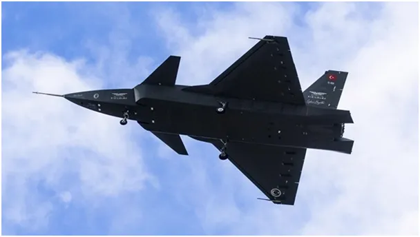
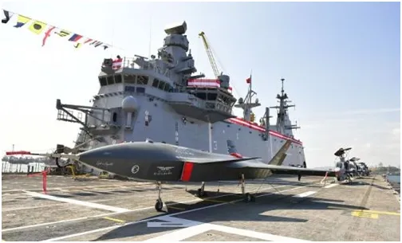
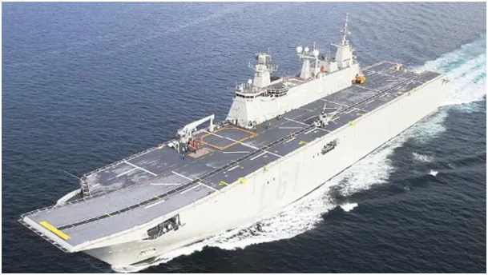
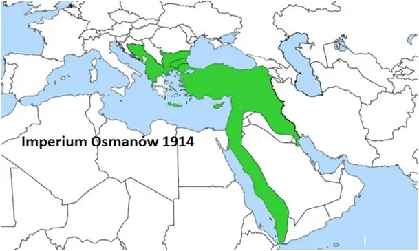

Bezzałogowy turecki myśliwiec z fabryki Bayraktar zamiast F 35
"Czerwone Jabłko" po kolejny udanym teście. To kolejny turecki dron, oryginalna nazwa to "Bayraktar Kızılelma". Jest to praktycznie bezzałogowy 6. tonowy myśliwiec, z możliwością zabrania 1,5 tony bomb i będzie na wyposażeniu tureckiej floty.

Gdy Turcja rozpoczynała budowę swego lotniskowca desantowego "TCG Anadolu", była członkiem konsorcjum w projekcie budowy myśliwca V generacji F-35. Amerykanie wykluczyli Turcję, gdy ta zaczęła kupować systemy obrony "S-400" z Rosji. Wcześniej przez lata bezskutecznie starali się o amerykańskie "Patrioty". Rola Turcji w NATO jest kluczowa w strefie południowej i wschodniej Europy, ale relacje z USA nie poprawiają się, Amerykanie zbroją Greków i Cypr.
Tymczasem Turcy zgodnie z chińskimi interesami naprawiają swoje relacje z Syrią i Iranem. Jeszcze w 1914 roku turecka granica była daleko na północ na Bałkanach, blisko Węgier i sięgała Oceanu Indyjskiego w dzisiejszym Iraku, takie rzeczy się pamięta.

Obecnie Europa, wpędzona w energetyczny kolaps, spogląda na Turcję jako najbliższe miejsce do przeniesienia produkcji, otwarcie to mówił kanclerz Niemiec. Węgrzy uczestniczą w pracach Organizacji Państw Tureckich. Europa jest de facto w stanie wojny gospodarczej z USA w kwestii współpracy z Azją i Chinami, Turcja w tej sytuacji jest idealnym sojusznikiem strzegącym Jedwabnego Szlaku.

W Syrii Turcy zwalczają "partyzantów" stojących po stronie USA, które okupuje roponośny wschód kraju, a na Morzu Czarnym buduje kolejne nitki gazociągu z Rosji. Aby dopełnić mozaikę, odrzutowy dron lata na ukraińskich silnikach pierwotnie przeznaczonych dla Chin. Świat nie jest czarno biały jak to pokazuje nam telewizor, warto czasem zajrzeć, co się dzieje na sąsiednim podwórku.

Źródło : https://www.trtavaz.com.tr/haber/tur/avrasyadan/kizilelma-yeniden-gokyuzunde-test-ucusu-basariyla-tamamlandi/643b08f801a30a3af4bcac32
Paweł Klimczewski